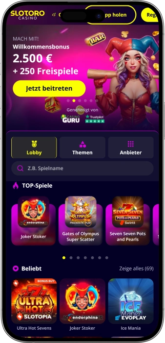

Exklusives Willkommensangebot von
Exklusives Willkommensangebot von
Slotoro Casino – Boni, Spiele, Turniere und Loyalitätsprogramm
Top-Casinos
Bonusdetails
Casino
Boni
Rate
Frei Spins
Mehr Infos
Erhalten
Vorteile
-
Bis zu €2.500 und 250 FS
-
3.000+ Spiele und Live
-
Loyalität mit 99 Levels
-
Wöchentlicher Cashback und Boni
-
Live-Chat rund um die Uhr
-
Krypto und klassische Zahlungen
-
Turniere und Hall of Fame
- In unserem Casino verbinden wir eine große Spielauswahl mit klaren Bonusmechaniken und einem komfortablen Service. Wir vereinen Slots, Live-Spiele, Turniere, VIP-Vorteile und flexible Zahlungsoptionen in einem einzigen Konto. So entsteht bei Slotoro ein geschlossenes Unterhaltungssystem mit Fokus auf Übersicht, Tempo und Komfort.
Slotoro App



Über das Slotoro
Wir heben uns dadurch ab, dass wir klassische Boni, eigene Unterhaltungsformate und Wettbewerbsmechaniken in einem Konto zusammenführen. Bei Slotoro wirkt vor allem die Kombination aus großem Welcome-Paket, Sonderaktionen und laufenden Leaderboard-Formaten besonders geschlossen.
- Willkommenspaket bis zu €2.500 + bis zu 250 Freispiele
- Turnierkampagnen mit Preisfonds bis zu €120.000
- Wheel of Fortune: Einsätze €5–€500, Auszahlung bis €1.500
In unserem Casino Slotoro verbinden wir Größe, Komfort und laufende Dynamik zu einer geschlossenen Spielerfahrung. Unsere Bibliothek umfasst mehr als 3.000 Spiele, sodass sich jede Session deutlich breiter anfühlt als in einem Standardangebot. Wir kombinieren klassische Slots, Jackpot-Formate, Live-Casino, Kartenspiele, Roulette, Blackjack, Video Poker und schnelle Instant Games.
Ein wichtiger Teil von Slotoro ist die klare Struktur der Bereiche, durch die sich neue Titel, Favoriten, Live-Tische und exklusive Formate schnell erreichen lassen. Wir arbeiten mit zahlreichen Providern, wodurch der Katalog abwechslungsreich bleibt und unterschiedliche Spielstile abdeckt. Für Nutzer mit Wettbewerbsfokus bieten wir Turniere, Leaderboards und eine Hall of Fame, in der große Ergebnisse sichtbar werden. Zusätzliche Unterhaltung entsteht durch Sonderformate wie Wheel of Fortune und wechselnde Themenkampagnen. Unser Bonusmodell endet nicht beim Willkommenspaket, sondern wird durch regelmäßige Aktionen, Reload-Angebote und Cashback erweitert. Gleichzeitig läuft bei Slotoro ein Loyalitätsprogramm mit 99 Levels und 10 Statusstufen, in dem Punkte in reale Vorteile umgewandelt werden. Die Grundmechanik ist klar: Für die Aktivität im Spiel sammeln wir Reward Points, und mit jedem Statusanstieg verbessern sich Umtauschkurs, Wochenbonus, Cashback und Geburtstagsbonus. Dadurch bleibt unser Angebot nicht nur zum Einstieg, sondern auch langfristig relevant. Auch mobil bleibt das Erlebnis vollständig, denn wir unterstützen Browser-Nutzung ebenso wie mobile Lösungen für iOS und Android. In einem einzigen Konto bündeln wir Boni, Zahlungsfunktionen, Verlauf und Loyalitätsfortschritt. Unser Support ist rund um die Uhr erreichbar, damit technische und finanzielle Fragen nicht offenbleiben. In vielen Bereichen steht zudem ein Demo-Modus bereit, damit der Einstieg in den Katalog in Ruhe erfolgen kann. So wird Slotoro zu einem Casino, das nicht auf einen einzelnen Vorteil reduziert ist, sondern auf ein vollständiges Unterhaltungssystem aus Spielen, Aktionen, Events, Ranglisten, VIP-Vorteilen und laufenden Neuheiten setzt.
Slotoro: Ihr Komfort — Regeln, Sicherheit, Support
Slotoro – Regeln für Zugang, Nutzung und verantwortungsvolles Spiel
In unserem Casino Slotoro beginnt die Nutzung mit klaren Zugangsregeln, die für jedes Konto gelten. Wir lassen nur volljährige Nutzer zu, die mindestens 18 Jahre alt sind oder das in ihrer Rechtsordnung geltende höhere Mindestalter erreicht haben. Für Echtgeldspiele ist eine Registrierung und Bestätigung des Kontos erforderlich. Im Demo-Modus können ausgewählte Spiele ohne Registrierung getestet werden, echte Auszahlungen sind jedoch nur mit Konto und Einzahlung möglich. Wir erwarten vollständige und korrekte Kontodaten, die zu einer realen Person gehören. Bei Slotoro gilt das Prinzip eines Kontos pro Spieler, weil nur so Bonusregeln, Verifizierung und Zahlungssicherheit sauber funktionieren. Ein- und Auszahlungen dürfen ausschließlich über Zahlungsmittel erfolgen, die auf den Kontoinhaber ausgestellt sind. Die Nutzung von Karten, Wallets oder Bankdaten Dritter ist nicht zulässig. Nach Bestätigung einer Zahlung ist eine Stornierung nicht garantiert, deshalb muss jede Aktion in der Kasse sorgfältig geprüft werden. Für Boni gelten gesonderte Bedingungen zu Wagering, Aktivierungsfenstern, Reihenfolge der Schritte und maximalem Einsatz. Während eines aktiven Bonusbetrags begrenzen wir den Einsatz, damit die Promotionen transparent und fair bleiben. Ebenfalls untersagt sind Mehrfachkonten, Bonusmissbrauch, manipulative Einsatzmuster und jede Umgehung unserer Regeln. Für den Sportbereich und für Live-Wetten gelten zusätzliche Betting Rules mit eigenen Einschränkungen. Im Bereich Responsible Gaming stellen wir persönliche Limits, Selbstsperre und weitere Kontrollinstrumente bereit. Diese Einstellungen können im Profil oder über den Live-Support gesetzt werden. Nach einer Deaktivierung des Kontos ist der Login, die Eröffnung eines neuen Kontos und die Auszahlung im Rahmen der geltenden Regeln eingeschränkt. Bei Streitfällen erfolgt zuerst der Kontakt mit dem Support und danach gegebenenfalls eine formelle Beschwerde mit Nachweisen. Anliegen zum verantwortungsvollen Spiel behandeln wir mit erhöhter Priorität.
Zugangsbedingungen
- • Spielberechtigt sind nur volljährige Nutzer ab 18 Jahren oder ab dem jeweils höheren gesetzlichen Mindestalter.
- • Für Echtgeldspiele benötigen wir ein registriertes und bestätigtes Konto.
- • Demo-Spiele sind in Teilen ohne Registrierung verfügbar.
- • Pro Spieler ist ein Konto vorgesehen.
Verbote und Einschränkungen
- • Ein- und Auszahlungen über Zahlungsmittel Dritter sind nicht erlaubt.
- • Mehrfachkonten und Bonusmissbrauch sind untersagt.
- • Manipulative Einsatzmuster während Bonusphasen sind verboten.
- • Für Sportwetten und Bonusnutzung gelten zusätzliche Spezialregeln.
Responsible Gaming
- • Wir stellen persönliche Aktivitätslimits zur Verfügung.
- • Selbstsperre und Selbstbeschränkung können über Profil oder Support aktiviert werden.
- • Ein Self-Assessment-Bereich unterstützt die eigene Einschätzung des Spielverhaltens.
- • Beschwerden mit Bezug zu Responsible Gaming werden bevorzugt bearbeitet.
Slotoro – Lizenz, Datenschutz, Verschlüsselung und Vertraulichkeit
In unserem Casino Slotoro bilden Lizenzierung und interne Richtlinien die Grundlage für Vertrauen. In unseren rechtlichen Materialien weisen wir darauf hin, dass wir unter einer Curaçao-Lizenz arbeiten, während Fachportale uns zusätzlich dem Umfeld der Curaçao Gaming Authority zuordnen. Für Nutzer bedeutet das eine klar geregelte Struktur für Betrieb, Zahlungen und Identitätsprüfung.
Unser Datenschutz basiert auf mehreren Ebenen. Wir erklären ausdrücklich, dass wir angemessene Maßnahmen gegen Verlust, Diebstahl, Missbrauch, unbefugten Zugriff, Veränderung und Zerstörung personenbezogener Daten einsetzen. Der Zugriff auf solche Daten ist auf autorisierte Mitarbeiter, Dienstleister und Partner mit legitimer operativer Notwendigkeit begrenzt.
Besonders wichtig ist die Sicherheit bei Login und Identitätsbestätigung. In unserer Privacy Policy beschreiben wir den Einsatz von Gerätefunktionen wie Face ID und Touch ID. Dabei verarbeiten wir nicht die biometrischen Rohdaten selbst, sondern nur das Ergebnis der Authentifizierung. Das reduziert die sensible Datenverarbeitung und macht den Zugang zugleich komfortabler.
Auch Finanzdaten werden gesondert geschützt. In unseren Unterlagen steht, dass Konten- und Transaktionsdaten weder verkauft noch gekauft, ausgetauscht oder anderweitig unautorisiert offengelegt werden. Ergänzend verweisen wir auf SSL-Verschlüsselung und geschützte Server, die den technischen Sicherheitsrahmen für Zahlungen und Kontozugriffe bilden.
Darüber hinaus arbeiten wir mit KYC- und AML-Mechanismen. Identitätsprüfung, Alterskontrolle und Überwachung relevanter Transaktionen sind Teil unseres Schutzmodells. Damit reduzieren wir Risiken wie Betrug, Missbrauch fremder Zahlungsmittel, Umgehung von Regeln und geldwäscherelevante Vorgänge.
Unsere Datenschutzpolitik regelt nicht nur die Datenerhebung, sondern auch Zweck, Speicherfrist und Betroffenenrechte. Für Kontoinhaber nennen wir eine Aufbewahrungsfrist von sechs Jahren ab Schließung des Kontos und Beendigung der Vertragsbeziehung. Für internationale Datenübermittlungen verweisen wir auf Schutzmechanismen wie Adequacy Decisions und Standard Contractual Clauses. Nutzer erhalten Rechte auf Auskunft, Berichtigung, Löschung und Einschränkung der Verarbeitung.
Slotoro – Einzahlungen, Auszahlungen und Sicherheit der Kasse
In unserem Casino Slotoro gestalten wir die Kasse so, dass Ein- und Auszahlungen möglichst klar und flexibel bleiben. In unseren offenen Beschreibungen betonen wir, dass die meisten Einzahlungsmethoden auch für Auszahlungen genutzt werden können. Zu den genannten Zahlungswegen gehören Karten, E-Wallets, Kryptowährungen und Banküberweisungen. Offiziell werden unter anderem Visa, Mastercard, Neteller, Bitcoin, Ethereum und Tether erwähnt. Weitere Optionen können je nach Kassenansicht des Kontos verfügbar sein. Einzahlungen laufen in der Regel sofort oder nahezu sofort durch, vor allem bei Karten, Wallets und Krypto. Die Auszahlungszeit nach Freigabe hängt dagegen vom gewählten Verfahren ab. Laut unseren Seiten und Fachreviews arbeiten Wallets und Kryptowährungen meist schneller als Karten und klassische Bankwege. Für schnelle Methoden wird oft ein Zeitfenster von bis zu 24 Stunden nach Freigabe genannt, während Karten bis zu 5 Werktage benötigen können. Auf einzelnen Seiten verweisen wir zusätzlich auf beschleunigte Auszahlungen mit einem Richtwert von bis zu 12 Stunden für geeignete Online-Methoden. Die Zahlungssicherheit wird durch SSL-Verschlüsselung, geschützte Server, KYC-Prüfungen und das Verbot von Drittanbieter-Zahlungen unterstützt. Bei größeren Auszahlungen oder auffälliger Aktivität kann eine zusätzliche Verifizierung erforderlich sein. Öffentliche Angaben zu Limits unterscheiden sich je nach Seite und Review, deshalb ist bei Slotoro eher mit Bereichen als mit einem einzigen festen Grenzwert zu arbeiten. In mehreren Fachreviews erscheint ein Monatslimit von bis zu €30.000, während der Mindestauszahlungsbetrag meist mit €10 bis €20 angegeben wird. Die endgültigen Bedingungen hängen von Methode, Kontostatus und erfolgreicher Prüfung ab.
| Method | Deposit speed | Payout after approval |
|---|---|---|
| Visa / Mastercard | Instant | Up to 5 business days |
| Neteller | Instant | Up to 24 hours |
| MiFinity / E-Wallet | Instant | Up to 24 hours |
| Bitcoin | Fast after confirm | Up to 24 hours |
| Ethereum / USDT | Fast after confirm | Up to 24 hours |
| Bank Transfer | 1–3 business days | 1–3 business days |
Limits bei Slotoro
- • Mindestauszahlung: meist ab €10, in einzelnen Reviews auch ab €20 genannt.
- • Tagesmaximum: kein einheitlicher öffentlicher Wert, abhängig von Methode und Kontostatus.
- • Monatsmaximum: in Fachreviews häufig bis zu €30.000.
Slotoro – Kundensupport, Reaktionszeit und Servicequalität
In unserem Casino Slotoro erfüllt der Support eine praktische Funktion und ist nicht nur ein formaler Bereich im Footer. Wir nennen Live-Chat, E-Mail und Telefon als verfügbare Kontaktwege, wobei der Chat direkt in die Benutzeroberfläche eingebunden ist und rund um die Uhr bereitsteht. Für die meisten Standardanliegen ist der Chat der schnellste Weg zur Antwort. In unserer Beschwerderichtlinie bestätigen wir zusätzlich einen 24/7-Live-Chat sowie eine Support-E-Mail für direkte Anliegen. Bei einfachen Fragen kommen Antworten im Chat häufig innerhalb von Sekunden oder wenigen Minuten, vor allem bei Themen wie Bonus, Login oder Kasse. Komplexere Fälle leiten wir in die E-Mail-Kommunikation oder in formale Formulare über, damit Unterlagen, Screenshots und Transaktionsdaten sauber erfasst werden können. Das ist besonders relevant bei Zahlungen, Verifizierung und Kontoprüfungen. Wenn ein Fall eskaliert werden muss, gibt es einen formellen Beschwerdeweg mit Beschreibung des Vorfalls und Nachweisen. Den Eingang einer Beschwerde bestätigen wir innerhalb von bis zu einer Woche. Die Bearbeitung dauert im Regelfall bis zu vier Wochen und kann in komplexen Fällen einmalig verlängert werden. Anliegen zum verantwortungsvollen Spiel werden bevorzugt behandelt und schneller priorisiert. Fachreviews beschreiben den Support von Slotoro als schnell und professionell. Das ist wichtig, weil guter Support im Casino nicht nur freundlich, sondern auch lösungsorientiert sein muss. Sprachlich ist Slotoro breiter aufgestellt als viele kleinere Marken, da Website und Support in mehreren europäischen Sprachen geführt werden. In Reviews werden unter anderem Englisch, Deutsch, Portugiesisch, Italienisch, Bulgarisch, Griechisch, Rumänisch, Ungarisch und Polnisch genannt. Damit bleibt die Kommunikation nicht auf eine einzige Sprache beschränkt. Für Nutzer bedeutet das weniger Hürden bei technischen, finanziellen und formellen Anliegen.
Kontaktkanäle
- • Live-Chat ist rund um die Uhr verfügbar und eignet sich für schnelle Rückfragen.
- • E-Mail ist ideal für Dokumente, Zahlungsfälle und formelle Beschwerden.
- • Telefon wird auf Hauptseiten als Kontaktkanal genannt.
Reaktionszeit und Qualität
- • Der Erstkontakt im Chat erfolgt bei Standardfällen meist sehr schnell.
- • Beschwerdeeingänge werden innerhalb von bis zu einer Woche bestätigt.
- • Die reguläre Bearbeitungszeit liegt bei bis zu vier Wochen.
- • Responsible-Gaming-Fälle werden priorisiert behandelt.
Sprachen
- • Support und Website decken mehrere europäische Sprachen ab.
- • Deutsch gehört zu den ausdrücklich genannten Support-Sprachen.
- • Mehrsprachigkeit erleichtert die Klärung von Finanz- und Kontofragen.
Softwareanbieter
Unterhaltung und Gaming im Slotoro
Slotoro – Loyalitätsprogramm, Statusstufen und VIP-Fortschritt
In unserem Casino Slotoro ist das Loyalitätsprogramm ein zentraler Langzeitbaustein und kein bloßes Extra. Wir haben ein System mit 99 Levels und 10 Statusstufen aufgebaut, damit der Fortschritt nicht nur im höchsten VIP-Bereich spürbar ist. Die Grundlogik ist klar: Für Spielaktivität sammeln wir Reward Points, die im Profil in reale Vorteile umgewandelt werden können. In der Programmbeschreibung wird erklärt, dass Punkte für Spielumsätze außerhalb des Live-Casinos gutgeschrieben werden und die Gesamtzahl der Punkte über Level und Status entscheidet. Der Einstiegsstatus Novice dient als Startpunkt ohne Umtauschkurs. Ab Challenger erscheint bereits ein Kurs von 133:1, dazu ein Weekly Bonus von 50% + 20 Freispiele, 3% Cashback und ein Geburtstagsbonus mit 25 Freispiele. Competitor verlangt 1.500 Punkte und hebt den Wochenbonus auf 60% + 30 Freispiele bei weiter 3% Cashback an. Expert startet bei 10.000 Punkten mit einem Kurs von 107:1, einem Wochenbonus von 70% + 30 Freispiele und 4% Cashback. Elite beginnt bei 20.000 Punkten und bringt 80% + 40 Freispiele sowie 4% Cashback. Highroller startet bei 50.000 Punkten und führt auf 90% + 50 Freispiele sowie 5% Cashback. Magnate beginnt bei 110.000 Punkten und steigert das Wochenangebot auf 100% + 60 Freispiele bei 5% Cashback. Legend startet bei 200.000 Punkten und bietet 120% + 70 Freispiele sowie 6% Cashback. Supreme beginnt bei 500.000 Punkten und erhöht dies auf 130% + 70 Freispiele bei 6% Cashback. God of Fortune startet bei 1.000.000 Punkten und bringt den besten Kurs 27:1, einen Weekly Bonus von 150% + 100 Freispiele und 7% Cashback. Deshalb fühlt sich unser Programm nicht wie ein einfacher Punktespeicher an, sondern wie eine fortlaufende Aufwertung des gesamten Kontos. Eine gesonderte VIP-Anmeldung ist nicht nötig, denn die Teilnahme ist in das normale Konto eingebaut. Wichtig ist nur, dass bestimmte Spiele und Anbieter von der Punktesammlung ausgeschlossen sind. Dadurch bleibt das Modell transparent, weil vorab erkennbar ist, wo Punkte gutgeschrieben werden und wo nicht.
Registrierungsbedingungen
- • Eine separate VIP-Anmeldung ist nicht erforderlich; das Programm ist im Slotoro-Konto integriert.
- • Voraussetzung ist ein reguläres Echtgeldkonto.
- • Reward Points werden für qualifizierende Spielaktivität gesammelt.
- • Live-Casino und bestimmte ausgeschlossene Titel zählen nicht für Loyalty Points.
Statusstufen und Freischaltung
- • Novice, Levels 1–9 – Einstiegsbereich ohne Umtauschkurs.
- • Challenger, Levels 10–19 / ab 500 Punkten – 133:1, 50% + 20 FS, 3% Cashback.
- • Competitor, Levels 20–29 / ab 1.500 Punkten – 120:1, 60% + 30 FS, 3% Cashback.
- • Expert, Levels 30–39 / ab 10.000 Punkten – 107:1, 70% + 30 FS, 4% Cashback.
- • Elite, Levels 40–49 / ab 20.000 Punkten – 93:1, 80% + 40 FS, 4% Cashback.
- • Highroller, Levels 50–59 / ab 50.000 Punkten – 80:1, 90% + 50 FS, 5% Cashback.
- • Magnate, Levels 60–69 / ab 110.000 Punkten – 67:1, 100% + 60 FS, 5% Cashback.
- • Legend, Levels 70–79 / ab 200.000 Punkten – 53:1, 120% + 70 FS, 6% Cashback.
- • Supreme, Levels 80–89 / ab 500.000 Punkten – 40:1, 130% + 70 FS, 6% Cashback.
- • God of Fortune, Levels 90–99 / ab 1.000.000 Punkten – 27:1, 150% + 100 FS, 7% Cashback.
Verfügbare Boni
- • Point Exchange – bessere Umtauschkurse mit jedem höheren Status.
- • Weekly Bonus – von 50% + 20 Freispiele bis 150% + 100 Freispiele.
- • Cashback – von 3% bis 7% je nach Status.
- • Birthday Bonus – zusätzliche Freispiele mit wachsender Stufe.
- • VIP-Effekt – höherer Status verbessert die gesamte Bonuskonfiguration des Kontos.
Slotoro – Boni, Gewinnformate und besondere Aktionen
In unserem Casino Slotoro endet das Bonusmodell nicht bei einer einzigen Startaktion. Auf unserer Bonusübersicht zeigen wir ein Welcome-Paket bis zu €2.500 und bis zu 250 Freispiele, während die separate Welcome-Seite den dreistufigen Aufbau genauer erklärt. Je nach Schritt nutzen wir Prozentboni auf Einzahlungen und Freispiele für konkrete Slots, wobei Aktivierungsfenster und Reihenfolge der Schritte fest definiert sind. Für Teile dieses Einstiegspakets gilt typischerweise ein Wagering von 40x und ein begrenztes Zeitfenster zur Erfüllung der Bedingungen. Neben dem Einstieg setzen wir auf Weekly Reload-Strukturen und Cashback-Angebote. Auf der Cashback-Seite wird erklärt, dass die Rückerstattung automatisch berechnet wird und vom jeweiligen Status abhängt. Die Gutschrift erfolgt in einem wöchentlichen Zyklus. Zusätzlich führen wir regelmäßig Turniere durch, bei denen das Spielen in einen Wettbewerb mit Live-Leaderboard übergeht. In der Kampagne Golden Glory beträgt der Gesamtpreisfonds €120.000, und Punkte werden über qualifizierende Spins in teilnehmenden Spielen gesammelt. Jenseits klassischer Aktionen arbeitet bei Slotoro auch die Hall of Fame, in der große Gewinne und starke Resultate sichtbar werden. Das verstärkt die Unterhaltung und macht hohe Auszahlungen zu einem sichtbaren Teil der Plattformdynamik. Eine Sonderrolle nimmt Wheel of Fortune ein – ein separates Spielformat mit Einsätzen von €5 bis €500 und einer maximalen Auszahlung von bis zu €1.500. Zusätzlich führen wir für den Sportbereich eigene Bonusmechaniken, bei denen ein Sportsbook-Willkommensbonus an die ersten zwei Einzahlungen gekoppelt ist. Saisonale und thematische Aktionen erscheinen über wechselnde Kampagnen- und Promotionsseiten. Auch einzelne Slot-Seiten verweisen auf einen Weekend Bonus mit zusätzlichem Bonusbetrag und Freispielen an bestimmten Tagen. Dadurch wirkt Slotoro nicht wie ein Casino mit nur einem einzigen Startangebot, sondern wie ein System aus Einstieg, Cashback, Wochenaktivität, Turnieren, Spezialspielen und saisonalen Kampagnen.
Wichtige Boni
- • Welcome Bonus – bis zu €2.500 und bis zu 250 Freispiele als Hauptangebot zum Start.
- • 3-Step Welcome Pack – mehrstufiger Bonus mit Einzahlungen, Prozentboni und Freispielelementen.
- • 40x Wagering – typisches Kriterium für Teile des Welcome-Angebots.
- • Aktivierungsfenster – jede Bonusstufe ist nur in einem begrenzten Zeitraum verfügbar.
Gewinn- und Eventformate
- • Golden Glory – Kampagne mit einem Preisfonds von €120.000.
- • Live Leaderboard – Platzierung über Punkte aus qualifizierenden Spins.
- • Hall of Fame – sichtbare Übersicht großer Gewinne und starker Ergebnisse.
- • Wheel of Fortune – Einsätze von €5 bis €500 und Auszahlungen bis €1.500.
Regelmäßige und saisonale Aktionen
- • Weekly Cashback – wöchentliche Rückerstattung abhängig vom Status.
- • Weekend Bonus – zusätzliche Bonusmittel und Freispiele an bestimmten Tagen.
- • Sportsbook Welcome Bonus – Bonusset für die ersten zwei Einzahlungen im Sportbereich.
- • Rotierende Turniere – laufende Wettbewerbe mit Preisfonds und Ranglisten.
Slotoro – Spiele, Formate und Wettmöglichkeiten
In unserem Casino Slotoro ist das Angebot bewusst breit aufgebaut und endet nicht bei klassischen Slots. In den Hauptbereichen und im Spiele-Lobby zeigen wir Kategorien wie Slots, Live Casino, Table Games, Roulettes, Blackjack, Video Poker, Classic Slots, Megaways, Insta Games, Exclusive Games, Jackpot und Slotoro Jackpot Hunt. Dadurch kann innerhalb eines Kontos schnell zwischen schnellen Slot-Sessions, strategischen Kartenspielen und Live-Formaten mit Dealern gewechselt werden. Das Fundament des Katalogs bilden die Slots, und genau hier liegt auch die größte Vielfalt bei Themen, Mechaniken und Providern. Wir führen neue Releases, beliebte Titel, klassische Walzen, Jackpot-Modelle und Spiele mit Bonus-Buy-Funktionen. Für Nutzer mit Fokus auf Regeln und Tischdynamik bieten wir Roulette, Blackjack, Baccarat, Poker und weitere Card Games in RNG- und Live-Varianten. Beim Roulette sind europäische, amerikanische, französische und moderne Versionen vertreten. Im Live-Casino setzen wir auf echte Dealer, HD-Streaming und Spielshows. Im Bereich Card Games verbinden wir Klassiker mit spezielleren Varianten wie Dragon Tiger, Casino Hold’em und Pai Gow Poker. Video Poker und Instant Games decken das Bedürfnis nach kürzeren, direkteren Sessions ab. Zusätzlich ist mit Wheel of Fortune ein eigenes Sonderformat im Angebot. Laut Reviews unterstützt Slotoro außerdem einen Wettbereich mit Sportsbook, eSports Betting und Virtual Sports; auf der Seite selbst sind ein Sportbereich und Betting Rules vorhanden. Damit ist die Plattform nicht nur ein Casino, sondern ein breiteres Gaming-Produkt. Das prägende Gesicht von Slotoro bleibt dennoch klar das Casino-Segment mit Slots, Live-Tischen und bonusgetragenen Spielaktivitäten. In Teilen des Katalogs steht ein Demo-Modus bereit, damit Mechaniken und Paytables ohne Risiko getestet werden können. So eignet sich Slotoro sowohl für schnelle Slot-Runden als auch für ruhigere Karten- und Live-Sessions sowie für zusätzliche Wettformate.
Spielkategorien
- • Slots – Kernbereich mit neuen, beliebten, klassischen und Jackpot-Titeln.
- • Live Casino – Live Roulette, Live Blackjack, Live Baccarat, Live Poker und Shows.
- • Table Games – klassische Tisch- und Kartenspiele in digitaler Form.
- • Roulettes – europäische, amerikanische, französische und Live-Varianten.
- • Blackjack – klassische und erweiterte Versionen.
- • Video Poker – strukturierte Sessions mit Kartenfokus.
- • Insta Games – schnelle und unmittelbare Spielmechaniken.
- • Exclusive Games – besondere Titel und interne Spezialformate.
- • Jackpot / Jackpot Hunt – Spiele mit Fokus auf hohe Auszahlungsdynamik.
- • Sports / Betting – separater Bereich mit Wetten, Virtual Sports und eSports laut Reviews.
Slotoro – Einsatzrahmen und bekannte Limits
In unserem Casino Slotoro hängt die Einsatzhöhe von der konkreten Spielart, dem Live-Tisch, dem Bonusmodus oder dem jeweiligen Sportereignis ab. Öffentlich nennen wir nur einen Teil der Grenzen, deshalb ist es sinnvoller, die ausdrücklich genannten Rahmen darzustellen als einen einzigen pauschalen Wert für den gesamten Katalog. Bei vielen Spielen werden Limits vom Provider festgelegt, während sie im Sportbereich vom Ereignis und Markt abhängen. Bei aktivem Bonusguthaben gilt zudem ein separates Einsatzlimit.
| Game Type | Min Bet | Max Bet |
|---|---|---|
| Wheel of Fortune | €5 | €500 |
| Bonus active play | Game dependent | €5 |
| Sports betting | Event dependent | Event dependent |
Slotoro – Turniere und Leaderboards: Teilnahme, Punkte und Platzierung
In unserem Casino Slotoro basieren Turniere auf qualifizierenden Spielen, einem Live-Leaderboard und einer Punktelogik, die während der Aktion laufend aktualisiert wird. In den offenen Kampagnenbedingungen nennen wir die teilnehmenden Spiele und – falls vorgesehen – den erforderlichen Mindesteinsatz. Während des Turniers trägt jeder qualifizierende Spin Punkte zur Gesamtwertung bei. Das laufende Ergebnis erscheint direkt in der Rangliste. Je mehr Punkte wir über den gesamten Aktionszeitraum gutschreiben, desto höher steigt ein Spieler. Damit zählen nicht nur die Spins selbst, sondern auch die Auswahl der qualifizierenden Titel, die Einhaltung des Mindesteinsatzes und die Aktivität innerhalb des Zeitfensters. In Golden Glory ist ein Gesamtpreisfonds von €120.000 ausgewiesen, wobei die Verteilung der Preise den jeweiligen Turnierregeln folgt. Die Platzierung lässt sich über das Leaderboard innerhalb der Aktion verfolgen. Die Hall of Fame verstärkt den Wettbewerbscharakter zusätzlich, weil starke Ergebnisse und große Gewinne sichtbar bleiben. Für die Teilnahme ist ein registriertes Konto und Echtgeldspiel in den qualifizierenden Slots erforderlich. Nach dem Ende einer Aktion werden die Endresultate gemäß Reglement bestätigt, und die Preise werden im jeweils vorgesehenen Format gutgeschrieben. Praktisch entsteht ein erfolgreicher Turnierlauf aus Tempo, passender Spielauswahl und konsequenter Kontrolle der eigenen Position.
Wichtige Turnierinfos
- • Teilnahmeberechtigt sind registrierte Spieler in qualifizierenden Echtgeldspielen.
- • Punkte entstehen über qualifizierende Spins in den teilnehmenden Slots.
- • Berücksichtigt werden Spielauswahl, Spins, eventueller Mindesteinsatz und Aktionszeitraum.
- • Die aktuelle Platzierung ist im Live-Leaderboard der Aktion sichtbar.
Preisabwicklung
- • Nach Aktionsende werden die Ergebnisse gemäß Kampagnenregeln bestätigt.
- • Die Art der Preisgutschrift richtet sich nach den Bedingungen des jeweiligen Turniers.
- • Nur regelkonforme Ergebnisse werden in der finalen Auswertung berücksichtigt.
FAQ
Ja. Ein Teil unseres Katalogs ist im Demo-Modus verfügbar, sodass ausgewählte Spiele ohne Konto getestet werden können. Für Echtgeldspiel, Boni und Auszahlungen wird jedoch ein registriertes Konto benötigt.
Nein. Ein- und Auszahlungen müssen über Zahlungsmittel des Kontoinhabers erfolgen. Zahlungsdaten Dritter sind nicht zulässig.
Ja. Auf der Seite stehen Responsible-Gaming-Bereiche, Self-Assessment, persönliche Limits und Selbstsperre zur Verfügung.
Nein. Limits hängen von Spiel, Provider, Live-Tisch, Bonusmodus oder Sportereignis ab.
Ja. Slotoro verbindet einen Casino-Bereich mit einem eigenen Sportbereich innerhalb derselben Plattform.